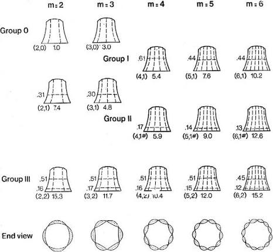

Lab : Les différents types de son
Exercice 1 : Synthèse d'un son de diapason (8 pt)
Le programme Faust suivant :
permet de synthétiser 1 mode de résonance (une sinusoïde avec une envelope exponentielle). Dans la configuration actuelle, la fréquence de la sinusoïde est de 300 Hz et le temps de résonance est de 0.25 seconde. 0.5 correspond au volume du son (cette valeur ne doit pas être modifiée).
Un diapason produit 1 mode de résonance à 440 Hz (LA3) pendant une durée d'environ 10s.
Changez le programme ci-dessus pour synthétiser un son de diapason.
Exercice 2 : Synthèse d'un son de corde (6 pt)
Le programme Faust suivant :
implémente 5 modes de résonance avec la fonction pm.modeFiler. Chaque itérations de pm.modeFiler équivaut à un mode. Dans le cas du premier mode (pm.modeFilter(300,2,1)), 300 correspond à la fréquence du mode, 2 à son temps de résonance en seconde et 1 à son volume.
Les fréquences des modes d'une corde pincée correspondent à f, fx2, fx3, fx4, où f est la fréquence de la fondamentale. Le temps de résonance d'une corde pincée est de 5 secondes environ et les modes les plus aigus disparaissent plus rapidement que les modes les plus graves.
Modifiez le programme ci-dessus pour synthétiser un son de corde pincée à 200 Hz contenant 5 modes. La durée du mode de la fondamentale devrait être de 5s. Les durées des autres modes sont à tester de manière empirique pour avoir un son satisfaisant.
Exercice 3 : Synthèse d'un son de cloche (6 pt)
La figure suivante :

présente les différents mode de vibration d'une cloche. Les valeurs 1.0, 3.0, 5.4, 7.6, etc. correspondent à des ratios de la fondamentale. Par exemple, si la fondamentale est 100Hz, alors les fréquences des premiers modes seront 100x1.0, 100x3.0, 100x5.4, 100x7.6, etc.
En vous inspirant du programme Faust de l'exercise 2, implémentez un synthétiseur de son de cloche. Partons du principe que cette cloche résonnera pendant 15s et que les modes aigus se dissiperont plus vite que les modes graves.